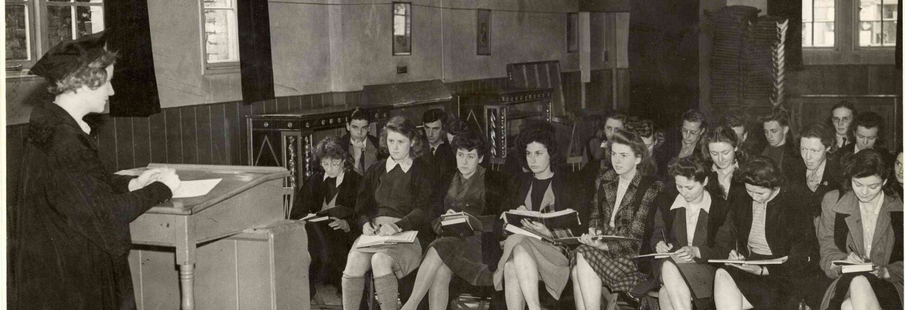

<!DOCTYPE html>
<html>
    <head>
        <title>University of Oxford</title>
        <link rel="stylesheet" type="text/css" href="tampilan oxford.css">
        <meta name="viewport" content="width=device-width, initial-scale=1">
    </head>
</html>

<body bgcolor="black">
    <header>
        <div class="uni"></div>
        <div class="homepage">HISTORY</div>
    </header>


    <nav>
        <div class="menu-bar">
        <ul>
          <li><a href="index.html">Homepage</a></li>
          <li id="menu-products">
            <button onclick="myFunction()" class="dropbtn">About ▼</button>
            <ul id="dropdown-products">
                <div id="myDropdown" class="dropdown-content">
              <li><a href="OrganisationsOxClar.html">Organisation</a></li>
              <li><a href="牛津大学Clar.html">牛津大学</a></li>
              <li><a href="InternationalOxfordClar.html">International Oxford</a></li>
            </div>
            </ul>
          </li>
          <li><a href="ResearchClar.html">Research</a></li>
        </ul>
        </div>
      </nav>


    <script>
        function myFunction() {
            document.getElementById("myDropdown").classList.toggle("show");
        }

        window.onclick = function(event) {
  if (!event.target.matches('.dropbtn')) {
    var dropdowns = document.getElementsByClassName("dropdown-content");
    var i;
    for (i = 0; i < dropdowns.length; i++) {
      var openDropdown = dropdowns[i];
      if (openDropdown.classList.contains('show')) {
        openDropdown.classList.remove('show');
      }
    }
  }
}
    </script>

    <div class="hist"></div>

<div id="wrahp">
    <div class="htitle">History</div>
    <div class="noise">Oxford is a unique and historic institution. As the oldest university in the English-speaking world, it can lay claim to nine centuries of continuous existence.

        Here’s a timeline of key dates:</div>
        <p></p>

    <div class="years">1096</div>
    <div class="big">Evidence of Teaching</div>
    <div class="noisy">There is no clear date of foundation but teaching existed at Oxford in some form in 1096.</div>

    <div class="years">1167</div>
    <div class="big">A Paris Ban</div>
    <div class="noisy">Oxford developed rapidly from 1167, when Henry II banned English students from attending the University of Paris following a quarrel with Thomas Becket.</div>

    <div class="years">1188</div>
    <div class="big">A Notable Visitor</div>
    <div class="noisy">In 1188, the historian Gerald of Wales gave a public reading to the assembled Oxford dons (university lecturers, especially at Oxford or Cambridge). As a royal clerk to the king and two archbishops, Gerald of Wales travelled widely and wrote extensively.</div>

    <div class="years">1190</div>
    <div class="big">First Overseas Students</div>
    <div class="noisy">In around 1190 the arrival of Emo of Friesland, the first known overseas student, set in motion the University’s tradition of developing international scholarly links.</div>

    <div class="years">1355</div>
    <div class="big">Tributes from Kings</div>
    <div class="noisy">Less than a century later, Oxford had achieved eminence above every other seat of learning, and won the praises of popes, kings and sages by virtue of its antiquity, curriculum, doctrine and privileges. In 1355, Edward III paid tribute to the University for its invaluable contribution to learning. He also commented on the services rendered to the state by distinguished Oxford graduates.</div>

    
    <div class="years">14th-17th Century</div>
    <div class="big">Religious and Political Controversial</div>
    <div class="noisy">Early on, Oxford became a centre for lively controversy with scholars involved in religious and political disputes.
      John Wyclif, a 14th-century Master of Balliol, campaigned for a Bible in English, against the wishes of the papacy.
      
      In the 16th century, Henry VIII forced the University to accept his divorce from Catherine of Aragon, and the Anglican churchmen Cranmer, Latimer and Ridley were later tried for heresy and burnt at the stake in the city.
      
      The University was Royalist during the Civil War and Charles I held acounter-Parliament in the University’s Convocation House. 

      In the late 17th century, the Oxford philosopher John Locke, suspected of treason, was forced to flee the country.</div>


    <div class="years">18th Century</div>
    <div class="big">Scientific discovery and religious revival</div>
    <div class="noisy">The 18th century became an era of scientific discovery and religious revival.
      Edmond Halley, Professor of Geometry, predicted the return of the comet that bears his name.
      
      John and Charles Wesley’s prayer meetings laid the foundations for the Methodist Society.</div>

    <div class="years">1833</div>
    <div class="big">The Oxford Movement</div>
    <div class="noisy">TFrom 1833 onwards, the Oxford Movement sought to revitalise the Catholic aspects of the Anglican Church. One of its leaders, John Henry Newman, became a Roman Catholic in 1845 and was later made a Cardinal. In 2019 he was canonised as a saint.</div>

    <div class="years">1860</div>
    <div class="big">A Famous Debate</div>
    <div class="noisy">In 1860 the new University Museum was the scene of a famous debate between Thomas Huxley, champion of evolution, and Bishop Wilberforce.</div>

    <div class="years">1920</div>
    <div class="big">Women Become Members</div>
    <div class="noisy">From 1878 academic halls were established for women, who were admitted as full members of the University from 1920. By 1986, all of Oxford’s male colleges had changed their statutes to admit women and, since 2008, all colleges have admitted men and women.</div>

    <div class="years">20-21st Century</div>
    <div class="big">Major Research Capabilities</div>
    <div class="noisy">During the 20th and early 21st centuries, Oxford established major new research capacities in the natural and applied sciences, including medicine. In so doing, it has enhanced and strengthened its traditional role as an international focus for learning and a forum for intellectual debate.</div>

    <div class="years">2020-22</div>
    <div class="big">A Life-saving Vaccine</div>
    <div class="noisy">Oxford University has been at the centre of the COVID-19 response from the very onset of the crisis, remaining at the forefront of global efforts to combat the disease and to mitigate its many effects, such as developing a vaccine and identifying treatments. By early 2022, more than 2.6 billion doses of the Oxford/AstraZeneca vaccine had been supplied to over 180 countries, with approximately two-thirds going to low and middle-income countries. The vaccine is estimated to have helped prevent 50 million COVID-19 cases, five million hospitalisations, and saved more than one million lives.</div>

<div class="inv">.</div>

    <footer>
      <div class="rama">CONNECT WITH US</div>
      <div class="mam">
          <a href="https://www.youtube.com/@oxforduniversity"></a></div>
      <div class="mam">
          <a href="https://www.instagram.com/oxford_uni/"></a></div>
      <p>&copy; 2024 - University of Oxford</p>
  </footer>